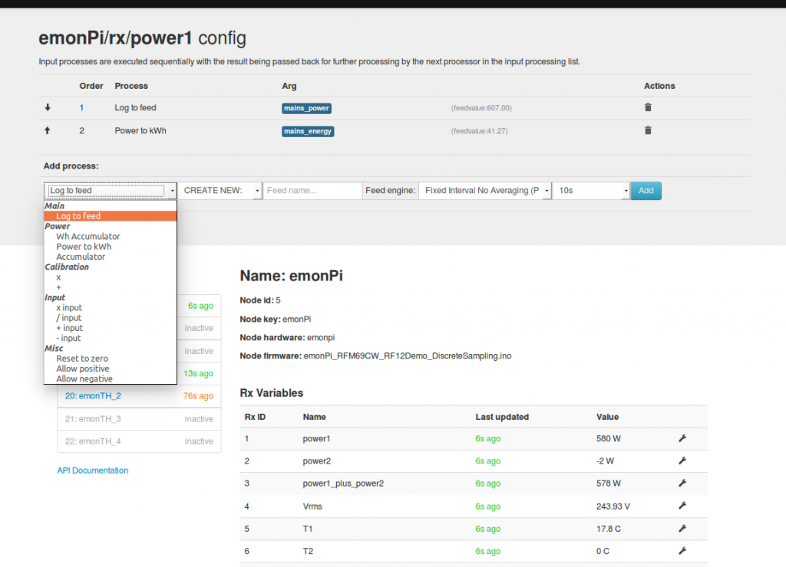

I seem to have an issue with Wh Accumultor numbers and am hoping that someone can shed some light.
A picture is worth 1000 words (pictures in this case)
All metrics are focused on July 2nd 2015
Pic1: My EmonPi node CT1 Settings
- Ignore the multiplier for now, this is to match the numbers to the readings from the meter on the Pool Pump.
- I'm logging the node readings to "Pool Pump" Feed
- Converting Power to KWh
- Accumulating Wh
Pic2: Graph of "Pool Pump Readings"
- The graph reflects exactly what I'm expecting, and the numbers match the readings on the pump
- 10:00 AM to 12:00 PM spike represents the pump running at a higher speed.
- The spikes at 3hr intervals represents the SWG Chrlorinator running.
Pic3: "Power to KWh" Readings
- Again all good, and the difference between Max and Min matches the data from Pic2
Pic4: "Wh Accumulator" Readings
- This is where I don't get the numbers, Why is this figure not around 5150? is there something wrong on how this is being calculated or is it my wrong interpretation / expectation?
Pic5: Visualzation from Wh Readings to get daily conumption Bargraph
- Had Wh reading been accurate, this bargraph would have represented my daily consumption
I also log to EmonCMS, so let's compare the data there to see if things are different (which they are)
Pic6: Node config (I log to more feeds)
- Ignore the 2.23 multiplier difference
- Same as before
- Same as before
- My Attempt to findout out the best way to calculate Daily consumption (more on this below)
- Again my Attempt to findout out the best way to calculate Daily consumption (more on this below)
- Wh Accumulator (see info under section pic9)
- Another feed of Wh accumulator (see why in info under section pic9)
- My attempt at understanding Histogram (still don't, but that's another story for another day)
- Again my Attempt to findout out the best way to calculate Daily consumption (more on this below)
Pic7: Same as Pic2 but on EmonCMS
- Data is accurate
- The delta is due to the multiplier difference which is expected.
Pic8: Same as Pic3 but on EmonCMS
- Again all the numbers are as expected.
Pic9: Same as Pic 3 but on EmonCMS (Wh Accumulator)
- Max and Min the same, for some reason Accumulation has stopped on EmonCMS, Why?
- Looking at Wh accumlator over a longer period (Pic10), I see that it is not a slope, but rather two chunks. why is that?
- Pic11 Started another feed of Wh accumlator when I realized it was not accumulating, but it is still not working.
Pic12: KWh to KWh/d on EmonCMS
- My attempt to understand and find out the best way to calculate daily consumption
- I have no idea why the reading is 0 on July 2nd, kind of matches Wh Accumulator, but isn't this supposed to be just a matter of Kwh - Kwh/d conversion? KWh figures are right.
- Confused
Pic13: Power to KWh/d
- Similar to section under pic12, my attempt to try a different approach
- Yet again, the feed had stopped working June 20th
Pic14: Wh increments to KWh/d on EmonCMS
- Truely confusing, if Wh had stopped accumulating / logging, then how is it possible that I have 15182.1 Wh usage?
- Even if we assume that for some reason the Wh data is accumulated, but somehow mising from the feeds, we're back to the original question of why the numbers don't match the power readings for that day?
I'm really hoping that someone can make sense out of all this,
Sorry for the long post, I tried to be as verbose as possible to avoid confusion and multiple back and forths.
Thanks in advance
Hrant
Re: What's wrong with Wh Accumulator
Was it the fact that it was a long post that bore most reasders? or was it one that stumped all 177 viewers just like it had me?
Not sure which one to hope for, but I'll even take any speculative answers at this point as I'm trying to make sense of all this data.
Thanks
Hrant
Re: What's wrong with Wh Accumulator
Hi Hrant
There is alot there to digest and although did take a look over it, I couldn't understand why you were using accumulators and assumed I was missing something.
Wh accumulator process will deduct the last value from the latest value to determine the change and add that to an ever accumulating total to track meter readings etc.It has some quite specific coding to work with ever increasing values that can restart from zero at any time (device is reset or rollover when a variable reaches it's max value) like a ratcheting effect.
What is the purpose of line 4 in pic 1?
In pic6 line 4 shouldn't be there as the Power to KWh in line 3 passes the power value to the next process. Line 6 is also getting fed a power value,
As far as I can see, you should have no need for any accumulators based on the data you have provided, unless, of cause I am missing something.
Paul
Re: What's wrong with Wh Accumulator
Thanks Paul, I appreciate your response, you always come true.
Let me try to answer the points your raised.
For lack of better understanding I'm using the Wh accumulator to basically accumulate the total power used over a period, then I could graph daily, weekly, monthly, or event match my utility bill period (which is not constant)
I've seen few guides / tutorials using it, so I thought to use it.
Example: http://openenergymonitor.blogspot.ca/2014/08/monitoring-solarpv-heatpump...
I didn't know that it had such issues, I was thinking that it is an accumulator on the feed, not effected by restarts, and all it does was add the latest power read values (every 10 sec) to the feed total and display the current total.
I'll avoid using it, but that still does not explain the wrong totals, unless if it is buggy or I'm not using it correctly.
See above
Yeah, the node configuration is a bit confusing to me, and probably the root of my problems.
It's not clear what is the input, is it the node data? the output of the first operation feeds to the input of the second operation? and then the second's output to third's input?
What if the output is not the same data type as the input?
what if I want to use the output of one operation for multiple operations?
Or the node data for multiple feeds / operations? Do I need to revert back to
Had the feed configuration accepted input from other feeds instead of just nodes, then it would have been intutitve and easy to use.
My reasoning of the setup up to lines 4 in pic 6 was as follows
Input: Node power, multiple to by 2.23, store it in feed "Pool Pump", convert it to Kwh, store it in Pool Pump KWh, convert it to KWh/d and store it in Pool Pump KWh-d
Hoping that KWh-d (pic12) would be a feed of daily consumption.
Was that wrong thinking? what should have I done?
Why is it reading zero for the period in question?
Lines 5-9 are my attempts trying to deduce how it functions to get my daily data.
but lines 1-4 shouldn't be wrong, at least I thought so.
I have managed to get daily consumption by using a visualization source of which being: "Power: Pool Pump"
But I would have prefered getting that as feed, hence why I used the different lines in the setup.
Thanks for your feedback, if there is any document explaining each item of a configuration in detail, i'd love to learn by reading rather than trial and error, forgive me if I missed the doc.
Hrant
Re: What's wrong with Wh Accumulator
I wasn't actually saying the Whaccumulator had issues, rather that it was designed to deal with the particular issues encountered with logging kWh feeds derived from other devices that could reset
You do not seem to be doing that, so shouldn't need Wh accumulators.
"I have managed to get daily consumption by using a visualization source of which being: "Power: Pool Pump" But I would have prefered getting that as feed, hence why I used the different lines in the setup."
Pic1 line 3 is an accumulating total kWh for the pool pump.
each node consists of 1 or more inputs. ech input has a processing chain, which processes the inputs value as defined saving the results to 1 or more feeds.
The output of each process is passed to the next process in the chain, but be aware some processes do not pass their result to the next, eg power to kWh/d saves the daily total but passes the current input value to it's output, ie it has no effect on the processing chain, think of it as a "T" piece, the input is passed through unchanged to the output while at the same time a "copy" goes off to the daily total.
If you want to do multiple chains from the same input, once you have completed one chain, use the "reset to zero" process then use "+input" and do the second chain, you can do this multiple times.
I would expect erratic results from using the wh accumulators as you have, so I would try and explain the results, try removing them and using the basic power to kwh and power to kwh/d etc
Paul
(Corrected the example)
Re: What's wrong with Wh Accumulator
but be aware some processes do not pass their result to the next, eg power to kWh saves the daily total but passes the current kWh input value to it's output, ie it has no effect on the processing chain,
Paul,
I haven't seen that info, (was able to figure it out, though) could you post a list of which processes behave that way? It might help prevent/resolve confusion down the road, as it were, regarding input processing.
Thanks!
BT
Re: What's wrong with Wh Accumulator
Thanks a lot Paul, this helps out immensely
I will reconfigure things and see how the data gathering goes, will post back if I have further questions.
In the meantime I have one question re:
Did you mean KWh to KWh/d or is it power to KWh
Leads me to think it is KWh to KWh/d
Thanks a bunch
Hrant
Re: What's wrong with Wh Accumulator
Oh, yes; it stumped me. Too much information, I think.
It's not your fault. I think that you probably provided all the information needed and everything I would have posted in your place, but I have a feeling that, like me, many people are trying to get their heads around their own, similar issues and don't have the head-space to analyse yours.
Amongst other things I, too am having a hard time in figuring how the kWh & kWh/d thing is supposed to work, based on the instructions in the guide (in fact, I can't actually seem to find a kWh/d entry in the feed process dialog of my emonCMS). I don't wish to derail this thread by going too 'meta' with this, but we need to have a better wiki, with wider, more up-to-date input , which can be used as an authoritative source for noobs, as well as advanced users. Ideally I'm thinking of something like the Arch wiki.
Anyway, here's my emonCMS dash, along with an example node and the feeds:
Notice how the feed to kWh just accumulates and doesn't give a daily total. You can also see that there is no option to give kWh/d on the log-to-feed menu.
Sorry. If this de-rails the thread, then let me know and I'll post elsewhere, but I feel that it is related.
Thanks,
Rich.
Re: What's wrong with Wh Accumulator
Hi Rick,
Thanks for the moral support, I don't feel alone (in being noob) but thankfully we have people like Paul who chime in and help out all the time.
That's probably because you are logging on EmonPi, my EmonPi does not have those processors either, you need to use EmonCMS (emoncms.org) to get those processors.
Yeah, you can get a daily total if you configure the bargraph, with interval value = d and delta set to 1
See attached pics (Feed being KWh)
Thanks
Hrant
Re: What's wrong with Wh Accumulator
@Hrant, sorry that example wasn't very clear and the "kWh" should have been "kWh/d", I've corrected it now. The power to kWh does do the same, I'm not 100% sure about the kWh to kWh/d without testing. sorry for adding to the confusion,
@Bill, I don't know the fill list off the top of my head I'm afraid. I did start tackling documenting all the processes for the emoncms.org documentation but it all got deleted sometime ago.
@Rich, Documentation for emoncms does indeed need tackling, as to whether a wiki suits the purpose I'm not entirely sure. it's a complex topic that is constantly evolving and added to the mix is the different variants as well as different versions, what is accurate in one instance one day may not be in another version/variant/platform, for it to be "used as an authoritative source for noobs, as well as advanced users" would need careful structuring and constant review,
The kWh/d is not an option in the low-write versions, Daily totals can be displayed using a bargraph as shown by Hrant.
Paul
Re: What's wrong with Wh Accumulator
I agree that any attempt at updating the documentation is fraught with variant and time issues. However the EmonPi is a new "Product" with software components "EmonHub" unfamiliar to new, and existing, implementers.
I too took " Wh accumulator" to mean an ever accumulating energy value which could be bar graphed into daily, weekly, etc, vis or dashboards. I wished to use it instead of kWh as it hopefully would give more precision than whole kWh. to compare with my PV meter which records kWh to two decimal places.
Any documentation on the process operators and Emonhub configuration would be most welcome, even just a couple of pages. I am sure it would cut down on the number of confused Noobs posts. Perhaps there should be an EmonPi link from the main OPenEnergyMonitor menu.
Re: What's wrong with Wh Accumulator
"I too took " Wh accumulator" to mean an ever accumulating energy value which could be bar graphed into daily, weekly, etc, vis or dashboards."
it is, but it's intended input source is an ever increasing value that could roll over or reset to zero. It's a different tool to achieve similar results from a different input type. If you were using the continuous sampling sketch on the emonTx v3 the Wh counters would start counting at zero each time it's restarted, so emoncms is armed with the "ratcheting" Wh accumulator.
The precision of the feeds and processors fairly uniform, the power to kWh has inbuilt x0.001 scaling so only the units change, but the displayed value is rounded by the page set-up the retained value is higher precision.
Try adding a x1000 processor after a power to KWh to see the value in Wh.
Paul
Re: What's wrong with Wh Accumulator
Thanks Paul for the clarification.
Hrant
Re: What's wrong with Wh Accumulator
I set up my dash as suggested by hrant above and it worked just as described, so thanks very much!
Unfortunately, I have been having another problem with the Wh feed: Massive, unexplainable spikes in the feed data:
Can anybody here explain this, or at least point me in the right direction?
Has anyone else encountered the same behavior?
Also, I have been experiencing irregular WIFI connectivity issues, whereby from what I can gather, my internet router (BT home hub) seems to be resetting occasionally (confirmed by checking router logs) and my emonpi's WIFI fails to reconnect properly, if at all.
These two issues could be in some way related, but I am no sure at all why this should be so.
Can anyone help?
Rich.
Re: What's wrong with Wh Accumulator
Hello Rich, looking at your earlier post I assume the daily graphs your showing there are generated from a feed generated by the power to kwh processor?
Can you show the raw output of that feed using the normal line graph viewer? A large negative value like that would suggest that its being reset but that's not something I've ever experienced with a feed created by the power to kwh processor and since this is all on the emonpi is should be independent of wifi..
Re: What's wrong with Wh Accumulator
Sorry for the delay.
Unfortunately, I'm still getting spikes:
Each of the feeds are from the power to kWh processor; as seen in the last post:
i.e. mains_power -> log to feed -> Power to kWh -> mains_energy
The *_energy feeds are fed into the three bottom bargraphs above, like so (in order, left to right):
Here's what I get from the normal line graph for each of these feeds:
mains_energy (kWh):
solar_energy (kWh):
house_energy (kWh):
For what it's worth, the My Solar app seems to be OK:
At least it's not showing thousands of kWh.
Any Ideas?
Re: What's wrong with Wh Accumulator
HI.
I've had very little time to diagnose this over the last few days, but here's some clarifications and thoughts on my situation:
That's all I can think of at the moment, but I will be back when I get some more time to spend investigating this.
Sorry for posting some unrelated issues here, but I needed to get them down before I forgot them and they were fresh in my mind.
TrystanLea or anyone else, please reply if you can help me to get my head around what's going on here, because much of it seems inexplicable to me at the moment.
Thanks,
Rich